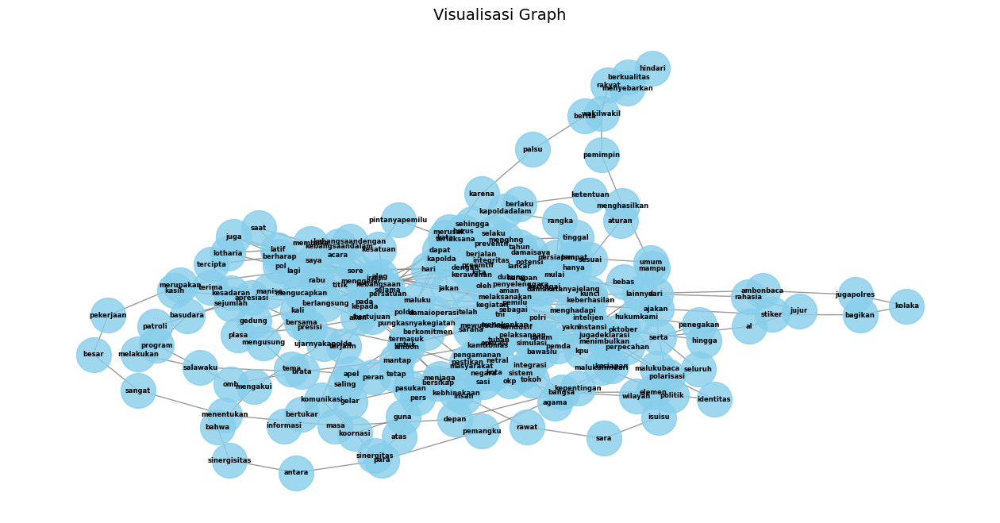

import requests
import csv
import pandas as pd
import re
import nltk
from nltk.tokenize import sent_tokenize, word_tokenize
import networkx as nx7 Fitur Kata Kunci
7.1 Menampilkan data
from google.colab import drive
drive.mount('/content/drive')Drive already mounted at /content/drive; to attempt to forcibly remount, call drive.mount("/content/drive", force_remount=True).dataf = pd.read_csv('/content/drive/MyDrive/ppw/CosinusSimiliarity/databeritasatu.com/databeritasatu.csv')
dataf| Kategori | Judul | Tanggal | Link | Konten | |
|---|---|---|---|---|---|
| 0 | Pemilu | Gelar Dialog Kebangsaan, Kapolda Maluku Harap ... | 5 jam yang lalu | https://www.beritasatu.com/nusantara/2780002/g... | Ambon, Beritasatu.com - Polda Maluku menggelar... |
| 1 | Pemilu | Puluhan APK Caleg di Kota Semarang Ditertibkan... | 5 jam yang lalu | https://www.beritasatu.com/nusantara/2779999/p... | Semarang, Beritasatu.com - Sekitar 60 alat per... |
| 2 | Pemilu | Langgar Aturan, Bawaslu Polman Tertibkan Ratus... | 7 jam yang lalu | https://www.beritasatu.com/nusantara/2779992/l... | Polewali Mandar, Beritasatu.com - Badan Pengaw... |
| 3 | Pemilu | Deklarasi Pemilu Damai 2024, TNI dan Polri Tub... | 7 jam yang lalu | https://www.beritasatu.com/nusantara/2779983/d... | Tuban, Beritasatu.com – Komandan Kodim (Dandim... |
| 4 | Pemilu | Respons Putusan MKMK, Anwar Usman: Ada Skenari... | 10 jam yang lalu | https://www.beritasatu.com/nasional/2779964/re... | Jakarta, Beritasatu.com - Hakim Mahkamah Konst... |
| ... | ... | ... | ... | ... | ... |
| 1232 | Techno | Inilah Daftar Lengkap Pemenang AMI Awards 2012 | 5 Jul 2012 | 09:47 WIB | https://www.beritasatu.com/news/58200/inilah-d... | Agnes dan Afgan berbagi penghargaanrrAjang pen... |
| 1233 | Techno | Oka Sulaksana Tampil di ABG | 7 Jun 2012 | 16:25 WIB | https://www.beritasatu.com/news/52678/oka-sula... | Oka nantinya akan turun di kelas "techno" putr... |
| 1234 | Techno | Saat Pemakai Terangsang, Gaun ini Jadi Trasparan | 5 Apr 2012 | 15:42 WIB | https://www.beritasatu.com/news/41000/saat-pem... | Gaun ini segera dipasarkan.rrIntimacy 2.0, ada... |
| 1235 | Techno | Situs Mobil Esemka Palsu Beredar | 24 Feb 2012 | 13:43 WIB | https://www.beritasatu.com/ekonomi/33442/situs... | Pelaku membuat website palsu http://www.mobile... |
| 1236 | Techno | Mobil Esemka Diuji Coba dari Solo ke Jakarta | 24 Feb 2012 | 11:25 WIB | https://www.beritasatu.com/news/33424/mobil-es... | Mobil Esemka ini berangkat dari Solo melewati ... |
1237 rows × 5 columns
7.1.1 Cek data duplikasi
dataf.drop_duplicates()| Kategori | Judul | Tanggal | Link | Konten | |
|---|---|---|---|---|---|
| 0 | Pemilu | Gelar Dialog Kebangsaan, Kapolda Maluku Harap ... | 5 jam yang lalu | https://www.beritasatu.com/nusantara/2780002/g... | Ambon, Beritasatu.com - Polda Maluku menggelar... |
| 1 | Pemilu | Puluhan APK Caleg di Kota Semarang Ditertibkan... | 5 jam yang lalu | https://www.beritasatu.com/nusantara/2779999/p... | Semarang, Beritasatu.com - Sekitar 60 alat per... |
| 2 | Pemilu | Langgar Aturan, Bawaslu Polman Tertibkan Ratus... | 7 jam yang lalu | https://www.beritasatu.com/nusantara/2779992/l... | Polewali Mandar, Beritasatu.com - Badan Pengaw... |
| 3 | Pemilu | Deklarasi Pemilu Damai 2024, TNI dan Polri Tub... | 7 jam yang lalu | https://www.beritasatu.com/nusantara/2779983/d... | Tuban, Beritasatu.com – Komandan Kodim (Dandim... |
| 4 | Pemilu | Respons Putusan MKMK, Anwar Usman: Ada Skenari... | 10 jam yang lalu | https://www.beritasatu.com/nasional/2779964/re... | Jakarta, Beritasatu.com - Hakim Mahkamah Konst... |
| ... | ... | ... | ... | ... | ... |
| 1232 | Techno | Inilah Daftar Lengkap Pemenang AMI Awards 2012 | 5 Jul 2012 | 09:47 WIB | https://www.beritasatu.com/news/58200/inilah-d... | Agnes dan Afgan berbagi penghargaanrrAjang pen... |
| 1233 | Techno | Oka Sulaksana Tampil di ABG | 7 Jun 2012 | 16:25 WIB | https://www.beritasatu.com/news/52678/oka-sula... | Oka nantinya akan turun di kelas "techno" putr... |
| 1234 | Techno | Saat Pemakai Terangsang, Gaun ini Jadi Trasparan | 5 Apr 2012 | 15:42 WIB | https://www.beritasatu.com/news/41000/saat-pem... | Gaun ini segera dipasarkan.rrIntimacy 2.0, ada... |
| 1235 | Techno | Situs Mobil Esemka Palsu Beredar | 24 Feb 2012 | 13:43 WIB | https://www.beritasatu.com/ekonomi/33442/situs... | Pelaku membuat website palsu http://www.mobile... |
| 1236 | Techno | Mobil Esemka Diuji Coba dari Solo ke Jakarta | 24 Feb 2012 | 11:25 WIB | https://www.beritasatu.com/news/33424/mobil-es... | Mobil Esemka ini berangkat dari Solo melewati ... |
1237 rows × 5 columns
7.1.2 Cek data null
dataf.isnull().sum()Kategori 0
Judul 0
Tanggal 0
Link 0
Konten 2
dtype: int647.1.3 Hapus data null
df = dataf.dropna()
df.isnull().sum()Kategori 0
Judul 0
Tanggal 0
Link 0
Konten 0
dtype: int647.1.4 Reset Index
df = df.reset_index(drop=True)df.shape(1235, 5)7.1.5 Menghitung jumlah data perkategori
df['Kategori'].value_counts()Sport 500
Pemilu 498
Techno 237
Name: Kategori, dtype: int647.2 Preprocessing
7.2.1 Cleaning data
Lower Case
df['Konten'] = df['Konten'].str.lower()
print(df['Konten'])0 ambon, beritasatu.com - polda maluku menggelar...
1 semarang, beritasatu.com - sekitar 60 alat per...
2 polewali mandar, beritasatu.com - badan pengaw...
3 tuban, beritasatu.com – komandan kodim (dandim...
4 jakarta, beritasatu.com - hakim mahkamah konst...
...
1230 agnes dan afgan berbagi penghargaanrrajang pen...
1231 oka nantinya akan turun di kelas "techno" putr...
1232 gaun ini segera dipasarkan.rrintimacy 2.0, ada...
1233 pelaku membuat website palsu http://www.mobile...
1234 mobil esemka ini berangkat dari solo melewati ...
Name: Konten, Length: 1235, dtype: objectMenghapus kata
# Daftar kata yang ingin dihilangkan
kata_hapus = ['advertisement', 'beritasatu.com','\n', 'dan','ini','itu','adalah','di','yang']
# Melakukan pengolahan pada setiap baris di kolom 'Konten'
for kata in kata_hapus:
df['Konten'] = df['Konten'].str.replace(kata, '')
# Menampilkan DataFrame setelah pengolahan
print(df['Konten'])0 ambon, - polda maluku menggelar alog kebangsa...
1 semarang, - sekitar 60 alat peraga kampanye (...
2 polewali mandar, - ba pengawas pemilu (bawasl...
3 tuban, – koman kom (m) 0811/tuban, bersama ka...
4 jakarta, - hakim mahkamah konstsi (mk) anwar ...
...
1230 agnes afgan berbagi penghargaanrrajang pengha...
1231 oka nantinya akan turun kelas "techno" putra,...
1232 gaun segera pasarkan.rrintimacy 2.0, nama ga...
1233 pelaku membuat website palsu http://www.mobile...
1234 mobil esemka berangkat dari solo melewati rut...
Name: Konten, Length: 1235, dtype: objectFutureWarning: The default value of regex will change from True to False in a future version.
df['Konten'] = df['Konten'].str.replace(kata, '')Hapus Karakter Khusus
df['Konten'] = df['Konten'].str.replace('[^a-zA-Z\s]', '')
df['Konten']FutureWarning: The default value of regex will change from True to False in a future version.
df['Konten'] = df['Konten'].str.replace('[^a-zA-Z\s]', '')0 ambon polda maluku menggelar alog kebangsaan...
1 semarang sekitar alat peraga kampanye apk c...
2 polewali mandar ba pengawas pemilu bawaslu k...
3 tuban koman kom m tuban bersama kapolres tub...
4 jakarta hakim mahkamah konstsi mk anwar usma...
...
1230 agnes afgan berbagi penghargaanrrajang pengha...
1231 oka nantinya akan turun kelas techno putrar r...
1232 gaun segera pasarkanrrintimacy nama gaun te...
1233 pelaku membuat website palsu httpwwwmobilesemk...
1234 mobil esemka berangkat dari solo melewati rut...
Name: Konten, Length: 1235, dtype: objectHapus Angka
df['Konten'] = df['Konten'].str.replace('\d+', '')
df['Konten']FutureWarning: The default value of regex will change from True to False in a future version.
df['Konten'] = df['Konten'].str.replace('\d+', '')0 ambon polda maluku menggelar alog kebangsaan...
1 semarang sekitar alat peraga kampanye apk c...
2 polewali mandar ba pengawas pemilu bawaslu k...
3 tuban koman kom m tuban bersama kapolres tub...
4 jakarta hakim mahkamah konstsi mk anwar usma...
...
1230 agnes afgan berbagi penghargaanrrajang pengha...
1231 oka nantinya akan turun kelas techno putrar r...
1232 gaun segera pasarkanrrintimacy nama gaun te...
1233 pelaku membuat website palsu httpwwwmobilesemk...
1234 mobil esemka berangkat dari solo melewati rut...
Name: Konten, Length: 1235, dtype: objectdf.shape(1235, 5)df['cleaning'] = df['Konten'].str.replace(r'[^\w\s,.?!]', '', regex=True).str.lower()
df| Kategori | Judul | Tanggal | Link | Konten | cleaning | |
|---|---|---|---|---|---|---|
| 0 | Pemilu | Gelar Dialog Kebangsaan, Kapolda Maluku Harap ... | 5 jam yang lalu | https://www.beritasatu.com/nusantara/2780002/g... | ambon polda maluku menggelar alog kebangsaan... | ambon polda maluku menggelar alog kebangsaan... |
| 1 | Pemilu | Puluhan APK Caleg di Kota Semarang Ditertibkan... | 5 jam yang lalu | https://www.beritasatu.com/nusantara/2779999/p... | semarang sekitar alat peraga kampanye apk c... | semarang sekitar alat peraga kampanye apk c... |
| 2 | Pemilu | Langgar Aturan, Bawaslu Polman Tertibkan Ratus... | 7 jam yang lalu | https://www.beritasatu.com/nusantara/2779992/l... | polewali mandar ba pengawas pemilu bawaslu k... | polewali mandar ba pengawas pemilu bawaslu k... |
| 3 | Pemilu | Deklarasi Pemilu Damai 2024, TNI dan Polri Tub... | 7 jam yang lalu | https://www.beritasatu.com/nusantara/2779983/d... | tuban koman kom m tuban bersama kapolres tub... | tuban koman kom m tuban bersama kapolres tub... |
| 4 | Pemilu | Respons Putusan MKMK, Anwar Usman: Ada Skenari... | 10 jam yang lalu | https://www.beritasatu.com/nasional/2779964/re... | jakarta hakim mahkamah konstsi mk anwar usma... | jakarta hakim mahkamah konstsi mk anwar usma... |
| ... | ... | ... | ... | ... | ... | ... |
| 1230 | Techno | Inilah Daftar Lengkap Pemenang AMI Awards 2012 | 5 Jul 2012 | 09:47 WIB | https://www.beritasatu.com/news/58200/inilah-d... | agnes afgan berbagi penghargaanrrajang pengha... | agnes afgan berbagi penghargaanrrajang pengha... |
| 1231 | Techno | Oka Sulaksana Tampil di ABG | 7 Jun 2012 | 16:25 WIB | https://www.beritasatu.com/news/52678/oka-sula... | oka nantinya akan turun kelas techno putrar r... | oka nantinya akan turun kelas techno putrar r... |
| 1232 | Techno | Saat Pemakai Terangsang, Gaun ini Jadi Trasparan | 5 Apr 2012 | 15:42 WIB | https://www.beritasatu.com/news/41000/saat-pem... | gaun segera pasarkanrrintimacy nama gaun te... | gaun segera pasarkanrrintimacy nama gaun te... |
| 1233 | Techno | Situs Mobil Esemka Palsu Beredar | 24 Feb 2012 | 13:43 WIB | https://www.beritasatu.com/ekonomi/33442/situs... | pelaku membuat website palsu httpwwwmobilesemk... | pelaku membuat website palsu httpwwwmobilesemk... |
| 1234 | Techno | Mobil Esemka Diuji Coba dari Solo ke Jakarta | 24 Feb 2012 | 11:25 WIB | https://www.beritasatu.com/news/33424/mobil-es... | mobil esemka berangkat dari solo melewati rut... | mobil esemka berangkat dari solo melewati rut... |
1235 rows × 6 columns
7.2.2 Tokenisasi
nltk.download('punkt')
from nltk.tokenize import sent_tokenize[nltk_data] Downloading package punkt to /root/nltk_data...
[nltk_data] Unzipping tokenizers/punkt.zip.# Tokenisasi teks menjadi kalimat menggunakan nltk
df['tokenize'] = df['cleaning'].apply(lambda x: ' '.join(nltk.sent_tokenize(x)))
df| Kategori | Judul | Tanggal | Link | Konten | cleaning | tokenize | |
|---|---|---|---|---|---|---|---|
| 0 | Pemilu | Gelar Dialog Kebangsaan, Kapolda Maluku Harap ... | 5 jam yang lalu | https://www.beritasatu.com/nusantara/2780002/g... | ambon polda maluku menggelar alog kebangsaan... | ambon polda maluku menggelar alog kebangsaan... | ambon polda maluku menggelar alog kebangsaan... |
| 1 | Pemilu | Puluhan APK Caleg di Kota Semarang Ditertibkan... | 5 jam yang lalu | https://www.beritasatu.com/nusantara/2779999/p... | semarang sekitar alat peraga kampanye apk c... | semarang sekitar alat peraga kampanye apk c... | semarang sekitar alat peraga kampanye apk c... |
| 2 | Pemilu | Langgar Aturan, Bawaslu Polman Tertibkan Ratus... | 7 jam yang lalu | https://www.beritasatu.com/nusantara/2779992/l... | polewali mandar ba pengawas pemilu bawaslu k... | polewali mandar ba pengawas pemilu bawaslu k... | polewali mandar ba pengawas pemilu bawaslu k... |
| 3 | Pemilu | Deklarasi Pemilu Damai 2024, TNI dan Polri Tub... | 7 jam yang lalu | https://www.beritasatu.com/nusantara/2779983/d... | tuban koman kom m tuban bersama kapolres tub... | tuban koman kom m tuban bersama kapolres tub... | tuban koman kom m tuban bersama kapolres tub... |
| 4 | Pemilu | Respons Putusan MKMK, Anwar Usman: Ada Skenari... | 10 jam yang lalu | https://www.beritasatu.com/nasional/2779964/re... | jakarta hakim mahkamah konstsi mk anwar usma... | jakarta hakim mahkamah konstsi mk anwar usma... | jakarta hakim mahkamah konstsi mk anwar usma... |
| ... | ... | ... | ... | ... | ... | ... | ... |
| 1230 | Techno | Inilah Daftar Lengkap Pemenang AMI Awards 2012 | 5 Jul 2012 | 09:47 WIB | https://www.beritasatu.com/news/58200/inilah-d... | agnes afgan berbagi penghargaanrrajang pengha... | agnes afgan berbagi penghargaanrrajang pengha... | agnes afgan berbagi penghargaanrrajang pengha... |
| 1231 | Techno | Oka Sulaksana Tampil di ABG | 7 Jun 2012 | 16:25 WIB | https://www.beritasatu.com/news/52678/oka-sula... | oka nantinya akan turun kelas techno putrar r... | oka nantinya akan turun kelas techno putrar r... | oka nantinya akan turun kelas techno putrar r... |
| 1232 | Techno | Saat Pemakai Terangsang, Gaun ini Jadi Trasparan | 5 Apr 2012 | 15:42 WIB | https://www.beritasatu.com/news/41000/saat-pem... | gaun segera pasarkanrrintimacy nama gaun te... | gaun segera pasarkanrrintimacy nama gaun te... | gaun segera pasarkanrrintimacy nama gaun te... |
| 1233 | Techno | Situs Mobil Esemka Palsu Beredar | 24 Feb 2012 | 13:43 WIB | https://www.beritasatu.com/ekonomi/33442/situs... | pelaku membuat website palsu httpwwwmobilesemk... | pelaku membuat website palsu httpwwwmobilesemk... | pelaku membuat website palsu httpwwwmobilesemk... |
| 1234 | Techno | Mobil Esemka Diuji Coba dari Solo ke Jakarta | 24 Feb 2012 | 11:25 WIB | https://www.beritasatu.com/news/33424/mobil-es... | mobil esemka berangkat dari solo melewati rut... | mobil esemka berangkat dari solo melewati rut... | mobil esemka berangkat dari solo melewati rut... |
1235 rows × 7 columns
df['tokenize'][0]'ambon polda maluku menggelar alog kebangsaan berlangsung gedung plasa presisi polda maluku pada rabu sore acara alog kebangsaan bertujuan untuk mewujudkan pemilu damai tahun sehingga dapat berjalan dengan lancar aman damaisaya selaku kapolda maluku mengucapkan terima kasih apresiasi kepada tni polri pemda kpu bawaslu okp tokoh agama tokoh masyarakat insan pers atas sinergitas koornasi komunikasi terjalin selama kata kapolda maluku irjen pol lotharia latif saat membuka alog kebangsaandalam alog kebangsaan kali mengusung tema peran masyarakat dalam mewujudkan pemilu aman damai sebagai sarana integrasi bangsa wilayah malukubaca jugadeklarasi pemilu damai tni polri tuban pastikan netral pelaksanaan pemilu hanya tinggal menghng hari lagi merupakan pekerjaan besar sangat menentukan masa depan bangsa negara untuk pada sore hari kita melaksanakan alog kebangsaan dengan harapan pemilu maluku dapat terlaksana dengan aman damai katanyajelang pemilu polri dukung oleh tni instansi lainnya melaksanakan operasi mantap brata omb salawaku melakukan patroli sejumlah titik kerawanan tempat umum lainnya ambonbaca jugapolres kolaka bagikan stiker ajakan pemilu damaioperasi akan berlangsung selama hari mulai dari oktober hingga oktober operasi menekankan kegiatan preemtif preventif dukung oleh kegiatan intelijen serta penegakan hukumkami polri telah berkomitmen untuk tetap bersikap netral dalam pemilu sesuai aturan ketentuan berlaku kata kapoldadalam rangka persiapan pemilu polda maluku telah melaksanakan berbagai kegiatan termasuk apel gelar pasukan pengamanan pemilu simulasi sistem pengamanan kota operasi mantap brata salawaku program basudara manise alog kebangsaandengan alog kebangsaan saya berharap tercipta kesadaran bersama untuk menjaga sasi kamtibmas aman kondusif maluku ujarnyakapolda mengakui bahwa sinergisitas antara para pemangku kepentingan serta seluruh elemen bangsa kesiapan instansi dalam menghadapi berbagai potensi kerawanan pemilu kunci keberhasilan pemilu irjen latif juga berharap alog kebangsaan dapat jakan sarana untuk saling bertukar informasi komunikasi koornasi guna menjaga kamtibmas kondusif malukuhindari politik identitas polarisasi isuisu sara rawat kebhinekaan untuk persatuan kesatuan pintanyapemilu kata kapolda harus berjalan aman damai bebas dari rahasia jujur al serta mampu menghasilkan pemimpin wakilwakil rakyat berkualitas hindari menyebarkan berita palsu karena dapat merusak integritas pemilu menimbulkan polarisasi serta perpecahan dalam masyarakat pungkasnyakegiatan alog kebangsaan hari oleh penyelenggara pemilu yakni kpu bawaslu tni polri pemda tokoh agama tokoh masyarakat okp insan pers ambon maluku pemilu pemilu alog kebangsaan alog kebangsaan polda maluku pemilu damai'7.3 Memecah Kalimat
df['pecah'] = df['tokenize'].apply(lambda x: sent_tokenize(str(x)) if pd.notnull(x) else [])
df| Kategori | Judul | Tanggal | Link | Konten | cleaning | tokenize | pecah | |
|---|---|---|---|---|---|---|---|---|
| 0 | Pemilu | Gelar Dialog Kebangsaan, Kapolda Maluku Harap ... | 5 jam yang lalu | https://www.beritasatu.com/nusantara/2780002/g... | ambon polda maluku menggelar alog kebangsaan... | ambon polda maluku menggelar alog kebangsaan... | ambon polda maluku menggelar alog kebangsaan... | [ambon polda maluku menggelar alog kebangsaa... |
| 1 | Pemilu | Puluhan APK Caleg di Kota Semarang Ditertibkan... | 5 jam yang lalu | https://www.beritasatu.com/nusantara/2779999/p... | semarang sekitar alat peraga kampanye apk c... | semarang sekitar alat peraga kampanye apk c... | semarang sekitar alat peraga kampanye apk c... | [semarang sekitar alat peraga kampanye apk ... |
| 2 | Pemilu | Langgar Aturan, Bawaslu Polman Tertibkan Ratus... | 7 jam yang lalu | https://www.beritasatu.com/nusantara/2779992/l... | polewali mandar ba pengawas pemilu bawaslu k... | polewali mandar ba pengawas pemilu bawaslu k... | polewali mandar ba pengawas pemilu bawaslu k... | [polewali mandar ba pengawas pemilu bawaslu ... |
| 3 | Pemilu | Deklarasi Pemilu Damai 2024, TNI dan Polri Tub... | 7 jam yang lalu | https://www.beritasatu.com/nusantara/2779983/d... | tuban koman kom m tuban bersama kapolres tub... | tuban koman kom m tuban bersama kapolres tub... | tuban koman kom m tuban bersama kapolres tub... | [tuban koman kom m tuban bersama kapolres tu... |
| 4 | Pemilu | Respons Putusan MKMK, Anwar Usman: Ada Skenari... | 10 jam yang lalu | https://www.beritasatu.com/nasional/2779964/re... | jakarta hakim mahkamah konstsi mk anwar usma... | jakarta hakim mahkamah konstsi mk anwar usma... | jakarta hakim mahkamah konstsi mk anwar usma... | [jakarta hakim mahkamah konstsi mk anwar usm... |
| ... | ... | ... | ... | ... | ... | ... | ... | ... |
| 1230 | Techno | Inilah Daftar Lengkap Pemenang AMI Awards 2012 | 5 Jul 2012 | 09:47 WIB | https://www.beritasatu.com/news/58200/inilah-d... | agnes afgan berbagi penghargaanrrajang pengha... | agnes afgan berbagi penghargaanrrajang pengha... | agnes afgan berbagi penghargaanrrajang pengha... | [agnes afgan berbagi penghargaanrrajang pengh... |
| 1231 | Techno | Oka Sulaksana Tampil di ABG | 7 Jun 2012 | 16:25 WIB | https://www.beritasatu.com/news/52678/oka-sula... | oka nantinya akan turun kelas techno putrar r... | oka nantinya akan turun kelas techno putrar r... | oka nantinya akan turun kelas techno putrar r... | [oka nantinya akan turun kelas techno putrar ... |
| 1232 | Techno | Saat Pemakai Terangsang, Gaun ini Jadi Trasparan | 5 Apr 2012 | 15:42 WIB | https://www.beritasatu.com/news/41000/saat-pem... | gaun segera pasarkanrrintimacy nama gaun te... | gaun segera pasarkanrrintimacy nama gaun te... | gaun segera pasarkanrrintimacy nama gaun te... | [gaun segera pasarkanrrintimacy nama gaun t... |
| 1233 | Techno | Situs Mobil Esemka Palsu Beredar | 24 Feb 2012 | 13:43 WIB | https://www.beritasatu.com/ekonomi/33442/situs... | pelaku membuat website palsu httpwwwmobilesemk... | pelaku membuat website palsu httpwwwmobilesemk... | pelaku membuat website palsu httpwwwmobilesemk... | [pelaku membuat website palsu httpwwwmobilesem... |
| 1234 | Techno | Mobil Esemka Diuji Coba dari Solo ke Jakarta | 24 Feb 2012 | 11:25 WIB | https://www.beritasatu.com/news/33424/mobil-es... | mobil esemka berangkat dari solo melewati rut... | mobil esemka berangkat dari solo melewati rut... | mobil esemka berangkat dari solo melewati rut... | [mobil esemka berangkat dari solo melewati ru... |
1235 rows × 8 columns
df['pecah'][0]['ambon polda maluku menggelar alog kebangsaan berlangsung gedung plasa presisi polda maluku pada rabu sore acara alog kebangsaan bertujuan untuk mewujudkan pemilu damai tahun sehingga dapat berjalan dengan lancar aman damaisaya selaku kapolda maluku mengucapkan terima kasih apresiasi kepada tni polri pemda kpu bawaslu okp tokoh agama tokoh masyarakat insan pers atas sinergitas koornasi komunikasi terjalin selama kata kapolda maluku irjen pol lotharia latif saat membuka alog kebangsaandalam alog kebangsaan kali mengusung tema peran masyarakat dalam mewujudkan pemilu aman damai sebagai sarana integrasi bangsa wilayah malukubaca jugadeklarasi pemilu damai tni polri tuban pastikan netral pelaksanaan pemilu hanya tinggal menghng hari lagi merupakan pekerjaan besar sangat menentukan masa depan bangsa negara untuk pada sore hari kita melaksanakan alog kebangsaan dengan harapan pemilu maluku dapat terlaksana dengan aman damai katanyajelang pemilu polri dukung oleh tni instansi lainnya melaksanakan operasi mantap brata omb salawaku melakukan patroli sejumlah titik kerawanan tempat umum lainnya ambonbaca jugapolres kolaka bagikan stiker ajakan pemilu damaioperasi akan berlangsung selama hari mulai dari oktober hingga oktober operasi menekankan kegiatan preemtif preventif dukung oleh kegiatan intelijen serta penegakan hukumkami polri telah berkomitmen untuk tetap bersikap netral dalam pemilu sesuai aturan ketentuan berlaku kata kapoldadalam rangka persiapan pemilu polda maluku telah melaksanakan berbagai kegiatan termasuk apel gelar pasukan pengamanan pemilu simulasi sistem pengamanan kota operasi mantap brata salawaku program basudara manise alog kebangsaandengan alog kebangsaan saya berharap tercipta kesadaran bersama untuk menjaga sasi kamtibmas aman kondusif maluku ujarnyakapolda mengakui bahwa sinergisitas antara para pemangku kepentingan serta seluruh elemen bangsa kesiapan instansi dalam menghadapi berbagai potensi kerawanan pemilu kunci keberhasilan pemilu irjen latif juga berharap alog kebangsaan dapat jakan sarana untuk saling bertukar informasi komunikasi koornasi guna menjaga kamtibmas kondusif malukuhindari politik identitas polarisasi isuisu sara rawat kebhinekaan untuk persatuan kesatuan pintanyapemilu kata kapolda harus berjalan aman damai bebas dari rahasia jujur al serta mampu menghasilkan pemimpin wakilwakil rakyat berkualitas hindari menyebarkan berita palsu karena dapat merusak integritas pemilu menimbulkan polarisasi serta perpecahan dalam masyarakat pungkasnyakegiatan alog kebangsaan hari oleh penyelenggara pemilu yakni kpu bawaslu tni polri pemda tokoh agama tokoh masyarakat okp insan pers ambon maluku pemilu pemilu alog kebangsaan alog kebangsaan polda maluku pemilu damai']Memakai 1 berita
# Mengambil berita dengan indeks tertentu
single_news_list = df['pecah'].iloc[0]
# Menggabungkan semua kalimat menjadi satu teks panjang
single_news = ' '.join(single_news_list)
# Memecah kalimat dari berita tunggal
sentences = sent_tokenize(single_news)
sentences['ambon polda maluku menggelar alog kebangsaan berlangsung gedung plasa presisi polda maluku pada rabu sore acara alog kebangsaan bertujuan untuk mewujudkan pemilu damai tahun sehingga dapat berjalan dengan lancar aman damaisaya selaku kapolda maluku mengucapkan terima kasih apresiasi kepada tni polri pemda kpu bawaslu okp tokoh agama tokoh masyarakat insan pers atas sinergitas koornasi komunikasi terjalin selama kata kapolda maluku irjen pol lotharia latif saat membuka alog kebangsaandalam alog kebangsaan kali mengusung tema peran masyarakat dalam mewujudkan pemilu aman damai sebagai sarana integrasi bangsa wilayah malukubaca jugadeklarasi pemilu damai tni polri tuban pastikan netral pelaksanaan pemilu hanya tinggal menghng hari lagi merupakan pekerjaan besar sangat menentukan masa depan bangsa negara untuk pada sore hari kita melaksanakan alog kebangsaan dengan harapan pemilu maluku dapat terlaksana dengan aman damai katanyajelang pemilu polri dukung oleh tni instansi lainnya melaksanakan operasi mantap brata omb salawaku melakukan patroli sejumlah titik kerawanan tempat umum lainnya ambonbaca jugapolres kolaka bagikan stiker ajakan pemilu damaioperasi akan berlangsung selama hari mulai dari oktober hingga oktober operasi menekankan kegiatan preemtif preventif dukung oleh kegiatan intelijen serta penegakan hukumkami polri telah berkomitmen untuk tetap bersikap netral dalam pemilu sesuai aturan ketentuan berlaku kata kapoldadalam rangka persiapan pemilu polda maluku telah melaksanakan berbagai kegiatan termasuk apel gelar pasukan pengamanan pemilu simulasi sistem pengamanan kota operasi mantap brata salawaku program basudara manise alog kebangsaandengan alog kebangsaan saya berharap tercipta kesadaran bersama untuk menjaga sasi kamtibmas aman kondusif maluku ujarnyakapolda mengakui bahwa sinergisitas antara para pemangku kepentingan serta seluruh elemen bangsa kesiapan instansi dalam menghadapi berbagai potensi kerawanan pemilu kunci keberhasilan pemilu irjen latif juga berharap alog kebangsaan dapat jakan sarana untuk saling bertukar informasi komunikasi koornasi guna menjaga kamtibmas kondusif malukuhindari politik identitas polarisasi isuisu sara rawat kebhinekaan untuk persatuan kesatuan pintanyapemilu kata kapolda harus berjalan aman damai bebas dari rahasia jujur al serta mampu menghasilkan pemimpin wakilwakil rakyat berkualitas hindari menyebarkan berita palsu karena dapat merusak integritas pemilu menimbulkan polarisasi serta perpecahan dalam masyarakat pungkasnyakegiatan alog kebangsaan hari oleh penyelenggara pemilu yakni kpu bawaslu tni polri pemda tokoh agama tokoh masyarakat okp insan pers ambon maluku pemilu pemilu alog kebangsaan alog kebangsaan polda maluku pemilu damai']7.4 Co-occurance Matrix
# Menggabungkan semua kalimat menjadi satu teks panjang
corpus_single_news = ' '.join(sentences)
# Tokenisasi kata
tokens_single_news = word_tokenize(corpus_single_news)
# Membentuk co-occurrence matrix
co_occ_matrix_single_news = nltk.FreqDist(nltk.bigrams(tokens_single_news))
data = {'source': [pair[0] for pair in co_occ_matrix_single_news.keys()],
'target': [pair[1] for pair in co_occ_matrix_single_news.keys()],
'weight': list(co_occ_matrix_single_news.values())}
# Ubah co-occurrence matrix ke dalam DataFrame
co_occ_df_single_news = pd.DataFrame(data)co_occ_df_single_news| source | target | weight | |
|---|---|---|---|
| 0 | ambon | polda | 1 |
| 1 | polda | maluku | 4 |
| 2 | maluku | menggelar | 1 |
| 3 | menggelar | alog | 1 |
| 4 | alog | kebangsaan | 9 |
| ... | ... | ... | ... |
| 318 | maluku | pemilu | 2 |
| 319 | pemilu | pemilu | 1 |
| 320 | pemilu | alog | 1 |
| 321 | kebangsaan | alog | 1 |
| 322 | kebangsaan | polda | 1 |
323 rows × 3 columns
Simpan ke excel
co_occ_df_single_news.to_excel('co_occurance_matrix.xlsx',index=False)from sklearn.feature_extraction.text import CountVectorizer
vectorizer = CountVectorizer()
count_matrix = vectorizer.fit_transform(sentences)
cooccurrence_matrix = (count_matrix.T @ count_matrix).toarray()
feature_names = vectorizer.get_feature_names_out()# Membuat DataFrame dari Co-occurrence Matrix
cooccurrence_df = pd.DataFrame(cooccurrence_matrix, columns=feature_names, index=feature_names)
# Menampilkan DataFrame
print("Co-occurrence DataFrame:")
cooccurrence_dfCo-occurrence DataFrame:| acara | agama | ajakan | akan | al | alog | aman | ambon | ambonbaca | antara | ... | titik | tni | tokoh | tuban | ujarnyakapolda | umum | untuk | wakilwakil | wilayah | yakni | |
|---|---|---|---|---|---|---|---|---|---|---|---|---|---|---|---|---|---|---|---|---|---|
| acara | 1 | 2 | 1 | 1 | 1 | 11 | 5 | 2 | 1 | 1 | ... | 1 | 4 | 4 | 1 | 1 | 1 | 6 | 1 | 1 | 1 |
| agama | 2 | 4 | 2 | 2 | 2 | 22 | 10 | 4 | 2 | 2 | ... | 2 | 8 | 8 | 2 | 2 | 2 | 12 | 2 | 2 | 2 |
| ajakan | 1 | 2 | 1 | 1 | 1 | 11 | 5 | 2 | 1 | 1 | ... | 1 | 4 | 4 | 1 | 1 | 1 | 6 | 1 | 1 | 1 |
| akan | 1 | 2 | 1 | 1 | 1 | 11 | 5 | 2 | 1 | 1 | ... | 1 | 4 | 4 | 1 | 1 | 1 | 6 | 1 | 1 | 1 |
| al | 1 | 2 | 1 | 1 | 1 | 11 | 5 | 2 | 1 | 1 | ... | 1 | 4 | 4 | 1 | 1 | 1 | 6 | 1 | 1 | 1 |
| ... | ... | ... | ... | ... | ... | ... | ... | ... | ... | ... | ... | ... | ... | ... | ... | ... | ... | ... | ... | ... | ... |
| umum | 1 | 2 | 1 | 1 | 1 | 11 | 5 | 2 | 1 | 1 | ... | 1 | 4 | 4 | 1 | 1 | 1 | 6 | 1 | 1 | 1 |
| untuk | 6 | 12 | 6 | 6 | 6 | 66 | 30 | 12 | 6 | 6 | ... | 6 | 24 | 24 | 6 | 6 | 6 | 36 | 6 | 6 | 6 |
| wakilwakil | 1 | 2 | 1 | 1 | 1 | 11 | 5 | 2 | 1 | 1 | ... | 1 | 4 | 4 | 1 | 1 | 1 | 6 | 1 | 1 | 1 |
| wilayah | 1 | 2 | 1 | 1 | 1 | 11 | 5 | 2 | 1 | 1 | ... | 1 | 4 | 4 | 1 | 1 | 1 | 6 | 1 | 1 | 1 |
| yakni | 1 | 2 | 1 | 1 | 1 | 11 | 5 | 2 | 1 | 1 | ... | 1 | 4 | 4 | 1 | 1 | 1 | 6 | 1 | 1 | 1 |
217 rows × 217 columns
7.5 Konversi ke graph
# Buat graph dari co-occurrence matrix
G_single_news = nx.Graph()
for index, row in co_occ_df_single_news.iterrows():
G_single_news.add_edge(row['source'], row['target'], weight=row['weight'])Visualisasi
import matplotlib.pyplot as plt
import networkx as nx
# Visualisasi graph dengan penyesuaian
plt.figure(figsize=(16, 8))
# Penentuan layout graf
pos = nx.spring_layout(G_single_news, seed=42)
# Gambar edges
nx.draw_networkx_edges(G_single_news, pos, alpha=0.8, edge_color="gray")
# Gambar nodes
nx.draw_networkx_nodes(G_single_news, pos, node_size=1000, node_color="skyblue", alpha=0.8)
# Label nodes
nx.draw_networkx_labels(G_single_news, pos, font_size=6, font_color="black", font_weight="bold")
plt.title("Visualisasi Graph", fontsize=14)
plt.axis("off")
plt.show()
7.6 Menghitung centrality node
Algoritma PageRank
Pengertian page rank sendiri yaitu algoritma yang dibuat oleh google yang berguna untuk membantu mesin telusur agar membandingkan halaman yang memenuhi kueri tertentu berdasarkan seberapa sering mereka di referensikan.
Rumus Page Rank
\[PR(A) = (1 - d) + d \left( \frac{PR(B)}{L(B)} + \frac{PR(C)}{L(C)} + \ldots + \frac{PR(N)}{L(N)} \right) \]
\[\begin{align*} &\bullet \quad PR(A) \text{ adalah PageRank dari halaman } A. \\ &\bullet \quad d \text{ adalah faktor damping, biasanya diatur menjadi } 0.85. \\ &\text{Ini mewakili probabilitas bahwa pengguna akan melanjutkan ke halaman lain daripada mengklik tautan.} \\ &\bullet \quad PR(B), PR(C), \ldots \text{ adalah PageRank dari halaman-halaman yang memiliki tautan ke halaman } A. \\ &\bullet \quad L(B), L(C), \ldots \text{ adalah jumlah tautan keluar dari masing-masing halaman } B, C, \ldots. \end{align*}\]
Dan rumus ini ketika pagerank sudah melakukan iterasi berikutnya \[PR^{(t+1)}(A) = (1 - d) + d \left( \frac{PR^{(t)}(B)}{L(B)} + \frac{PR^{(t)}(C)}{L(C)} + \ldots + \frac{PR^{(t)}(N)}{L(N)} \right) \]
Perhitungan otomatis
# Closeness centrality
closeness_centrality_single_news = nx.closeness_centrality(G_single_news)
closeness_df = pd.DataFrame(list(closeness_centrality_single_news.items()), columns=['token', 'closeness_centrality'])
# Pagerank centrality
pagerank_centrality_single_news = nx.pagerank(G_single_news)
pagerank_df = pd.DataFrame(list(pagerank_centrality_single_news.items()), columns=['token', 'pagerank_centrality'])
# Tampilkan DataFrame
print("DataFrame Closeness Centrality:")
print(closeness_df)
print("\nDataFrame Pagerank Centrality:")
print(pagerank_df)DataFrame Closeness Centrality:
token closeness_centrality
0 ambon 0.237102
1 polda 0.271698
2 maluku 0.294278
3 menggelar 0.245176
4 alog 0.283837
.. ... ...
212 menimbulkan 0.257449
213 perpecahan 0.232258
214 pungkasnyakegiatan 0.233010
215 penyelenggara 0.257757
216 yakni 0.247423
[217 rows x 2 columns]
DataFrame Pagerank Centrality:
token pagerank_centrality
0 ambon 0.003700
1 polda 0.008898
2 maluku 0.018979
3 menggelar 0.002773
4 alog 0.014662
.. ... ...
212 menimbulkan 0.003043
213 perpecahan 0.003040
214 pungkasnyakegiatan 0.002838
215 penyelenggara 0.002712
216 yakni 0.002711
[217 rows x 2 columns]Perhitungan Manual
# Baca file Excel
df = pd.read_excel("/content/drive/MyDrive/ppw/PageRank/co_occurance_matrix.xlsx")
# Tampilkan DataFrame
df.head()| source | target | weight | - | Initial Page rank | Current Page Rank iterasi 1 | penerapan | hasil 1 | -.1 | Iterasi 2 | penerapan 2 | hasil 2 | hasil 3 | hasil 4 | |
|---|---|---|---|---|---|---|---|---|---|---|---|---|---|---|
| 0 | ambon | polda | 1 | 323 node = 1/323 > 0,00309597523 | 0.003096 | (1-0.85) + 0.85 (pr(polda) / 1) | 0,15 + 0,85 (0,00309597523 / 1) | 0.152632 | NaN | (1-0.85) + 0.85 (pr(polda)/1) | 0,15 + 0,85 (0,152631579/1) | 0.279737 | 0.387776 | 0.479610 |
| 1 | polda | maluku | 4 | NaN | 0.003096 | (1-0.85) + 0.85 (pr(maluku) / 4) | 0,15 + 0,85 (0,00309597523 / 4) | 0.150658 | NaN | (1-0.85) + 0.85 (pr(maluku)/4) | 0,15 + 0,85 (0,150657895/4) | 0.182015 | 0.188678 | 0.190094 |
| 2 | maluku | menggelar | 1 | NaN | 0.003096 | (1-0.85) + 0.85 (pr(menggelar) / 1) | 0,15 + 0,85 (0,00309597523 / 1) | 0.152632 | NaN | (1-0.85) + 0.85 (pr(menggelar)/1) | 0,15 + 0,85 (0,152631579/1) | 0.279737 | 0.387776 | 0.479610 |
| 3 | menggelar | alog | 1 | NaN | 0.003096 | (1-0.85) + 0.85 (pr(alog) / 1) | 0,15 + 0,85 (0,00309597523 / 1) | 0.152632 | NaN | (1-0.85) + 0.85 (pr(alog)/1) | 0,15 + 0,85 (0,152631579/1) | 0.279737 | 0.387776 | 0.479610 |
| 4 | alog | kebangsaan | 9 | NaN | 0.003096 | (1-0.85) + 0.85 (pr(kebangsaan) / 9) | 0,15 + 0,85 (0,00309597523 / 9) | 0.150292 | NaN | (1-0.85) + 0.85 (pr(kebangsaan)/9) | 0,15 + 0,85 (0,150292398/9) | 0.164194 | 0.165507 | 0.165631 |
7.7 Ranking Node
# Merangking node kata dari closeness centrality
ranked_by_closeness_single_news = closeness_df.sort_values(by='closeness_centrality', ascending=False)
print("Hasil ranking dari closeness centrality:")
ranked_by_closeness_single_newsHasil ranking dari closeness centrality:| token | closeness_centrality | |
|---|---|---|
| 17 | pemilu | 0.324324 |
| 2 | maluku | 0.294278 |
| 4 | alog | 0.283837 |
| 63 | dalam | 0.280884 |
| 16 | mewujudkan | 0.273764 |
| ... | ... | ... |
| 83 | sangat | 0.122658 |
| 202 | wakilwakil | 0.119271 |
| 205 | hindari | 0.118486 |
| 204 | berkualitas | 0.110204 |
| 203 | rakyat | 0.109700 |
217 rows × 2 columns
# Merangking node kata dari pagerank centrality
ranked_by_pagerank_single_news = pagerank_df.sort_values(by='pagerank_centrality', ascending=False)
print("Hasil ranking dari page rank:")
ranked_by_pagerank_single_newsHasil ranking dari page rank:| token | pagerank_centrality | |
|---|---|---|
| 17 | pemilu | 0.037457 |
| 2 | maluku | 0.018979 |
| 15 | untuk | 0.016171 |
| 4 | alog | 0.014662 |
| 18 | damai | 0.012316 |
| ... | ... | ... |
| 24 | lancar | 0.002662 |
| 92 | katanyajelang | 0.002638 |
| 120 | hingga | 0.002088 |
| 152 | kebangsaandengan | 0.001824 |
| 58 | kebangsaandalam | 0.001824 |
217 rows × 2 columns